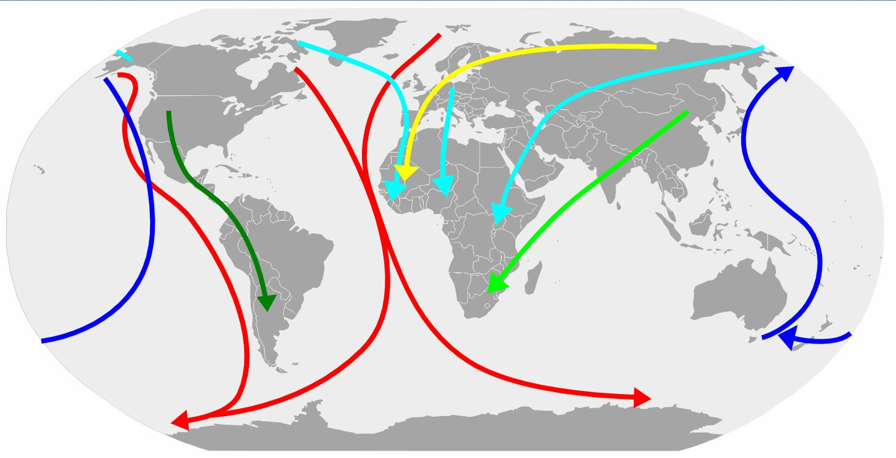

Виа Аристотелис

Виа Аристотелис e главен маршрут на миграция на птиците от Европа към Африка минаващ през Западна Българ
ия и вторият по численост на мигриращите птици след В
иа Понтика. Този път е описан още в древността от Ари
стотел и това е причината днес да бъде наречен на не
гово име. Според него по поречието на Струма се изтег
ляли на юг пеликаните, докато през Виа Понтика отлита
ли жеравите. Пътят свързва Дунав с Бяло море, като зап
очва от северозападния ъгъл на страната във Видинска о
бласт, минава през Врачанския Балкан, от там през Искъ
рското дефиле пресича Стара планина и се спуска до Софи
йското поле. Оттук по долината на река Струма достига д
о Бяло море. Често като клон на Виа Аристотелис се сочи
и поречието на река Места. По миграционния път премина
ват около 50 вида птици. По поречието на река Струма п
о време на сезонните миграции се наблюдава особено стр
упване на птици в районите на Рупелски, Кресненски, Ор
ановски, Бобошевски, Земенски пролом. Тук те намират п
одходящи условия за почивка и намиране на храна, която
дава възможност прелетните птици да възстановят силите си.